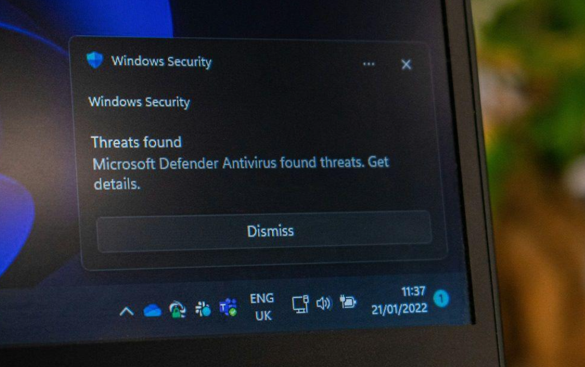

Understanding Malware
Malware, short for malicious software, is a broad term used to describe programs that are designed to harm devices, steal information, or gain access to computer systems without permission. There are many different types of malware, and attackers use all kinds of methods to infect devices and systems depending on what they are trying to accomplish!
Detecting Malware
Detecting malware is an important part of protecting computer systems, and antivirus software like Microsoft Defender, Malwarebytes, and other security programs help by monitoring activity on a device and looking for anything suspicious. When something potentially harmful is found, the software can alert the user and help prevent further damage.
The image below shows an example of a malware detection notification from Windows Security! In this example, Microsoft Defender has found potential threats and is letting the user know that something may need attention. This is one way antivirus software helps users recognize malware, but there are also things called false positives, where a program gets flagged as malicious even though it is actually safe. Because of this, it's important to look into alerts and verify that something is actually harmful before taking action!

Example of Microsoft Defender notifying a user that threats have been found.